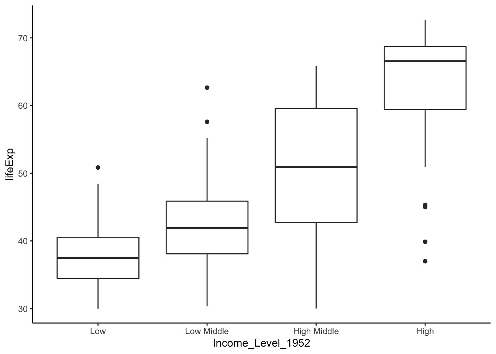

6 Central limit theorem
In this chapter, we will investigate the intuition behind the central limit theorem (CLT). In short, the CLT states that if you have a bunch of samples and plotted the distribution of means (not individual observations!), the distribution would look normal regardless of the population distribution. This theorem is incredibly powerful, and we will explore how it applies to data analysis in future labs.
6.1 Central limit theorem for means
As always, let’s load the tidyverse.
Many observed quantities follow normal distribution. Imagine we have a population following normal distribution that has a mean of 10 and standard deviation of 2. If we draw samples from it, are we able to estimate its mean?
In this example, we will use rnorm, a random number generate for this simulation. rnorm returns a vector of random numbers from the specifies distribution.
## [1] 8.503677 11.841820 10.116162 11.615287 6.398794 7.904308 9.208985
## [8] 11.256206 9.441586 10.427146## [1] 9.671397Apparently the mean is not 10, but it is pretty close. This should make sense; when we draw a sample to estimate the mean, we may get very close to the desired “true mean”, but we also expect some error. What if I repeat the estimation above with 10 samples? That is, what if each time I use 10 randomly generated numbers to estimate the mean, and I do this for many times?
means10 <- as.vector(NA)
# Doing experiments for 10000 times
for (i in 1:10000) {
# Each time I draw 10 random numbers from the normal distribution
samp10 <- rnorm(10, mean=10, sd=2)
# I calculate the mean of these 10 numbers and record it
means10[i] <- mean(samp10)
}
plot(density(means10))
What does this figure mean? Of the 10000 estimations that we did, most estimations were very close to 10. The probability to overestimate and underestimate decreases as the estimation deviates from 10, our “true mean”.
This time, let’s make estimations with a larger sample size, say 100 and 1000. Will a larger sample size reduce the error of estimation? Don’t worry too much about what the code is doing—just focus on the figure.
means100 <- as.vector(NA)
means1000 <- as.vector(NA)
# Doing experiments for 10000 times
for (i in 1:10000) {
# Each time I draw 10 random numbers from the normal distribution
samp100 <- rnorm(100, mean=10, sd=2)
# I calculate the mean of these 10 numbers and record it
means100[i] <- mean(samp100)
samp1000 <- rnorm(1000, mean=10, sd=2)
# I calculate the mean of these 10 numbers and record it
means1000[i] <- mean(samp1000)
}
df <- rbind(
data.frame(means = means10, sample_size = "n=10"),
data.frame(means = means100, sample_size = "n=100"),
data.frame(means = means1000, sample_size = "n=1000")
)
ggplot(df, aes(x = means, fill = sample_size)) +
geom_density(alpha = 0.3) +
theme_classic()
With a larger sample size, your estimation for the mean will have a smaller error.
6.2 Central limit theorem for probability
Now I would like to estimate the probability of getting a “head” of when I flip a coin.
Each time I flip a coin, if I end up with a “head”, I record it as a 1. If I get a “tail”, I will record it as a 0. If I flip the coin for 10 times where I have 6 “heads” and 4 “tails”, the frequency of getting “heads” would be 6/10 = 0.6. If I flip the coin for a sufficiently large amount of times, we would like to expect the frequency to approach the theoretical 0.5. Is this the case?
means10 <- as.vector(NA)
means100 <- as.vector(NA)
means1000 <- as.vector(NA)
means10000 <- as.vector(NA)
for (i in 1:10000) {
sample10 <- sample(c(1,0), prob = c(0.5, 0.5), replace = TRUE, size = 10)
means10[i] <- sum(sample10) / 10
sample100 <- sample(c(1,0), prob = c(0.5, 0.5), replace = TRUE, size = 100)
means100[i] <- sum(sample100) / 100
sample1000 <- sample(c(1,0), prob = c(0.5, 0.5), replace = TRUE, size = 1000)
means1000[i] <- sum(sample1000) / 1000
sample10000 <- sample(c(1,0), prob = c(0.5, 0.5), replace = TRUE, size = 10000)
means10000[i] <- sum(sample10000) / 10000
}
df <- rbind(
data.frame(means = means10, sample_size = "10 trials"),
data.frame(means = means100, sample_size = "100 trials"),
data.frame(means = means1000, sample_size = "1000 trials"),
data.frame(means = means10000, sample_size = "10000 trials")
)
ggplot(df, aes(x = means, fill = sample_size)) +
geom_density(alpha = 0.3) +
theme_classic()
Can you explain the pattern we observed with sample size of 10? How about the height and width of other curves? What conclusion could we draw?
This example may appear intuitive: of course when you flip the coin for many times, you will most likely get a 50% chance of “heads”. How about an “uneven” coin that preferably lands with a “head” with 75% chance? In this case we change the prob in the sample() function with this new probability.
means10 <- as.vector(NA)
means100 <- as.vector(NA)
means1000 <- as.vector(NA)
means10000 <- as.vector(NA)
for (i in 1:10000) {
sample10 <- sample(c(1,0), prob = c(0.75, 0.25), replace = TRUE, size = 10)
means10[i] <- sum(sample10) / 10
sample100 <- sample(c(1,0), prob = c(0.75, 0.25), replace = TRUE, size = 100)
means100[i] <- sum(sample100) / 100
sample1000 <- sample(c(1,0), prob = c(0.75, 0.25), replace = TRUE, size = 1000)
means1000[i] <- sum(sample1000) / 1000
sample10000 <- sample(c(1,0), prob = c(0.75, 0.25), replace = TRUE, size = 10000)
means10000[i] <- sum(sample10000) / 10000
}
df <- rbind(
data.frame(means = means10, sample_size = "10 numbers"),
data.frame(means = means100, sample_size = "100 numbers"),
data.frame(means = means1000, sample_size = "1000 numbers"),
data.frame(means = means10000, sample_size = "10000 numbers")
)
library(ggplot2)
ggplot(df, aes(x = means, fill = sample_size)) +
geom_density(alpha = 0.3) +
theme_classic()
Indeed, the peaks converged again and shifted to the new position of 0.75.
As you can see, the bigger your sample size, the less variability there is, and the more the distribution looks like a normal distribution. More precisely, the bigger your sample size, the distribution of the sample means will be normally distributed, even if the population is not normally distributed. A good rule of “sufficiently large sample size” is n ≥ 30.
This example shows the power of the CLT—it allows us to predict a sampling distribution regardless of the original population.
NOTE: The CLT says NOTHING about the individual sample points themselves. Remember our original data data points are either 0 or 1. However, the mean is a continuous variable.